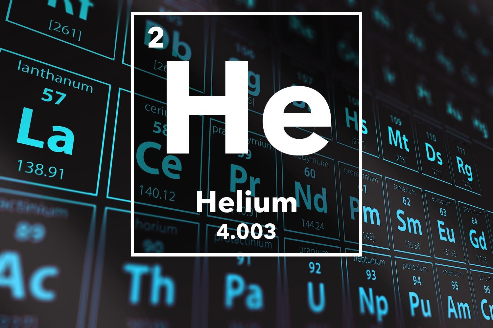

Helium

Apperance of Helium
colorless gas, exhibiting a gray, cloudy glow (or reddish orange if an especially high voltage is used) when placed in an electric field
Helium's Standart Atomic Weight
Ar°(He)4.002602±0.000002
4.0026±0.0001 (abridged)
Helium in the periodic table
Atomic number (Z): 2
Group: group 18 (noble gases)
Period: period 1
Block: s-block
Electron configuration:1s2
Electrons per shell: 2
Physical properties of Helium
Phase at STP: gas
Melting point: 0.95 K (-272.20°C, -457.96 °F) (at 2.5 MPa)
Boiling point: 4.222 K (-268.928 °C, -452.070 °F)
Density (at STP): 0.1786 g/L
when liquid (at m.p.): 0.145 g/cm3
when liquid (at b.p.): 0.125 g/cm3
Triple point: 2.177 K, 5.043 kPa
Critical point: 5.1953 K, 0.22746 MPa
Heat of fusion: 0.0138 kJ/mol
Heat of vaporization: 0.0829 kJ/mol
Molar heat capacity: 20.78 J/(mol·K)
Vapor pressure: (defined by ITS-90)
Chemical Properties of Helium
Oxidation states: 0
Electronegativity: Pauling scale: no data
Ionization energies: 1st: 2372.3 kJ/mol
2nd: 5250.5 kJ/mol
Covalent radius: 28 pm
Van der Waals radius: 140 pm
Other Properties of Helium
Natural occurrence: primordial
Crystal structure: hexagonal close-packed (hcp)Hexagonal close-packed crystal structure for helium
Speed of sound: 972 m/s
Thermal conductivity: 0.1513 W/(m·K)
Magnetic ordering: diamagnetic
Molar magnetic susceptibility: -1.88×10-6 cm3/mol (298 K)
CAS Number: 7440-59-7
History of Helium
Naming: after Helios, Greek god of the Sun
Discovery: Pierre Janssen, Norman Lockyer (1868)
First isolation: William Ramsay, Per Teodor Cleve, Abraham Langlet (1895)
Uses of Helium
Minor uses:
Industrial leak detection:
A dual chamber helium leak detection machine
One industrial application for helium is leak detection. Because helium diffuses through solids three times faster than air, it is used as a tracer gas to detect leaks in high-vacuum equipment
(such as cryogenic tanks) and high-pressure containers. The tested object is placed in a chamber, which is then evacuated and filled with helium. The helium that escapes through the leaks is detected by
a sensitive device (helium mass spectrometer), even at the leak rates as small as 10-9 mbar·L/s (10-10 Pa·m3/s). The measurement procedure is normally automatic and is called helium integral test.
A simpler procedure is to fill the tested object with helium and to manually search for leaks with a hand-held device.
Helium leaks through cracks should not be confused with gas permeation through a bulk material.
While helium has documented permeation constants (thus a calculable permeation rate) through glasses, ceramics, and synthetic materials, inert gases such as helium will not permeate most bulk metals.
Flight:
The Good Year Blimp
Because of its low density and incombustibility, helium is the gas of choice to fill airships such as the Goodyear blimp.
Because it is lighter than air, airships and balloons are inflated with helium for lift. While hydrogen gas is more buoyant,
and escapes permeating through a membrane at a lower rate, helium has the advantage of being non-flammable, and indeed fire-retardant.
Another minor use is in rocketry, where helium is used as an ullage medium to backfill rocket propellant tanks in flight and to condense hydrogen and oxygen to make rocket fuel.
It is also used to purge fuel and oxidizer from ground support equipment prior to launch and to pre-cool liquid hydrogen in space vehicles. For example,
the Saturn V rocket used in the Apollo program needed about 370,000 m3 (13 million cubic feet) of helium to launch.
Minor commercial and recreational uses:
Helium as a breathing gas has no narcotic properties, so helium mixtures such as trimix, heliox and heliair are used for deep diving to reduce the effects of narcosis,
which worsen with increasing depth. As pressure increases with depth, the density of the breathing gas also increases, and the low molecular weight of helium is found to considerably reduce the effort of breathing
by lowering the density of the mixture. This reduces the Reynolds number of flow, leading to a reduction of turbulent flow and an increase in laminar flow, which requires less work of breathing.
At depths below 150 metres (490 ft) divers breathing helium–oxygen mixtures begin to experience tremors and a decrease in psychomotor function, symptoms of high-pressure nervous syndrome.
This effect may be countered to some extent by adding an amount of narcotic gas such as hydrogen or nitrogen to a helium–oxygen mixture.
Helium–neon lasers, a type of low-powered gas laser producing a red beam, had various practical applications which included barcode readers and laser pointers,
before they were almost universally replaced by cheaper diode lasers.
For its inertness and high thermal conductivity, neutron transparency, and because it does not form radioactive isotopes under reactor conditions,
helium is used as a heat-transfer medium in some gas-cooled nuclear reactors.
Helium, mixed with a heavier gas such as xenon, is useful for thermoacoustic refrigeration due to the resulting high heat capacity ratio and low Prandtl number.
The inertness of helium has environmental advantages over conventional refrigeration systems which contribute to ozone depletion or global warming.
Helium is also used in some hard disk drives.
Scientific and medical uses:
The use of helium reduces the distorting effects of temperature variations in the space between lenses in some telescopes,
due to its extremely low index of refraction. This method is especially used in solar telescopes where a vacuum tight telescope tube would be too heavy.
Helium is a commonly used carrier gas for gas chromatography.
The age of rocks and minerals that contain uranium and thorium can be estimated by measuring the level of helium with a process known as helium dating.
Helium at low temperatures is used in cryogenics, and in certain cryogenics applications. As examples of applications,
liquid helium is used to cool certain metals to the extremely low temperatures required for superconductivity, such as in superconducting magnets for magnetic resonance imaging.
The Large Hadron Collider at CERN uses 96 metric tons of liquid helium to maintain the temperature at 1.9 K (-271.25 °C; -456.25 °F).
Helium was approved for medical use in the United States in April 2020 for humans and animals.